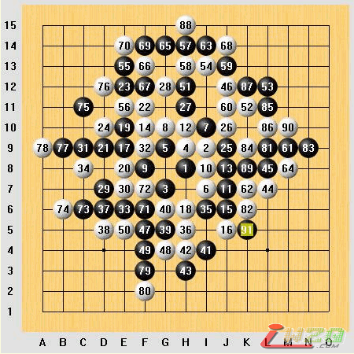

1993年8月第三届（瑞典）世界连珠锦标赛棋局评论（23）
#1 1993年8月第三届（瑞典）世界连珠锦标赛棋局评论（23） 作者：有志青年 发表时间：2007-4-24 9:50:58
1993年8月第三届（瑞典）世界连珠锦标赛第四轮
斜月局（交换），5A＝J9，Inguvar Sundling（黑）和长谷川一人（白）

长谷川依然选择开出他熟悉的斜月局。14是一个以前流行的变化，现在已不常用，定式至28。29可以考虑在30的位置继续保持攻势，但Inguvar选择了更加保险的方式。至36白棋建立起了局部很大的优势，但Inguvar的37、39利用自身的强手，巧妙地迫使长谷川跟随而把优势控制住了。44可能有些飘逸，如果直接在89位防守可能更符合大多数日本棋手的风格，但局面将更加僵持——这可能是长谷川不愿意看到的，他希望通过占据空间把这局棋赢下来。至52，白棋再次建立起一定的优势，但Inguvar毕竟不是泛泛之辈，一直很好地应付着，或许52下在53位可以使局面更加混乱而给白棋以可乘之机？58、60都很强，但无奈上面空间太小了。Inguvar或许也意识到这盘棋以和棋结束会是当然的结局，69起的一连串交换后，他在右边也没有犯下任何错误。91之后长谷川无奈地接受了和棋。